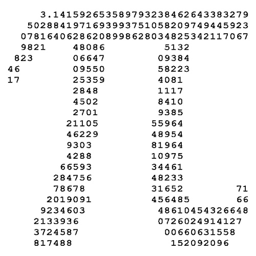
- Chiedere all'utente il valore del raggio
rdi un cerchiorreale compreso tra 0 e 200
- Se
rè valido- Visualizzare il cerchio
- Mostrare il valore dell'area e della circonferenza
- Se invece
rè fuori range- Mostrare un messaggio d'errore

Michele Tomaiuolo
Ingegneria dell'Informazione, UniPR

r di un cerchior reale compreso tra 0 e 200r è validor è fuori rangea, b, cControllare prima di tutto se a è minore degli altri due
Altrimenti controllare se b è minore di c
Altrimenti ...
Nell'anno corrente, l'utente ha già avuto il compleanno?
Espressione booleana composta con and, or, not...
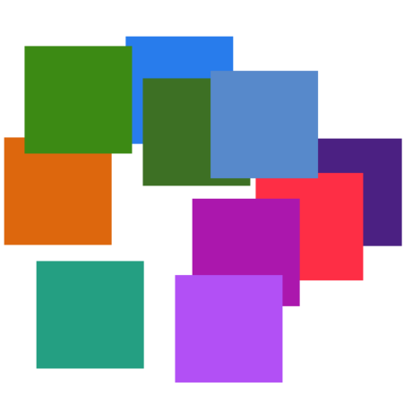
nn quadratiCominciare a disegnare un solo quadrato grigio, in posizione casuale
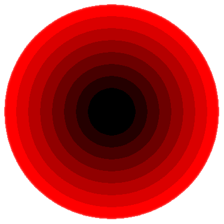
Per iniziare, inserire l'operazione di disegno un ciclo, togliendo ad ogni passo 10 (p.es.) al raggio e al livello di rosso
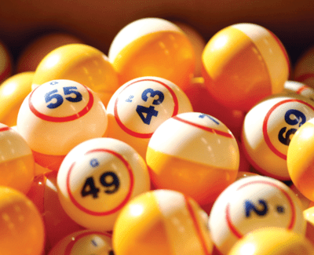
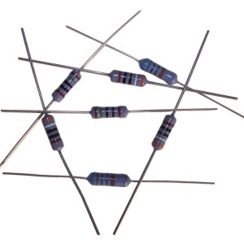
Formule utili:
Rs = ∑ Ri
1/Rp = ∑ (1/Ri)
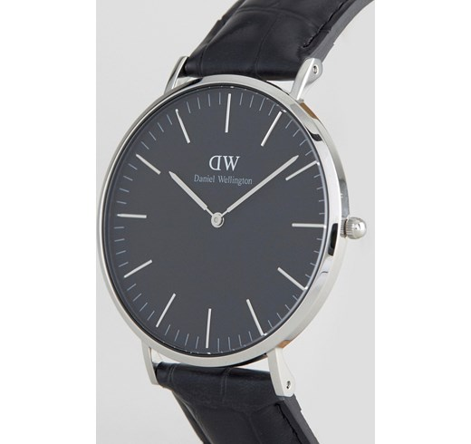
Usare math.Sin e math.Cos per determinare le posizioni in cui disegnare
Basta memorizzare tre coppie di coordinate cartesiane
Non è richiesto di utilizzare la grafica
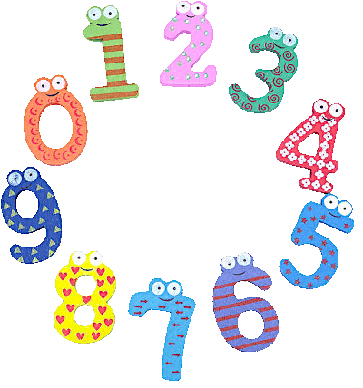
'0' a '9')Usare un ciclo for sulla stringa (sequenza di caratteri)
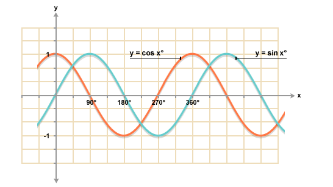
sin(x)x tra 0 e 359from math import pi, sin
sin opera su radianti: calcolare sin(x * pi / 180), anzichè sin(x)
Creare una lista vuota, e poi aggiungere un valore alla volta con append
In alternativa, usare la list comprehension
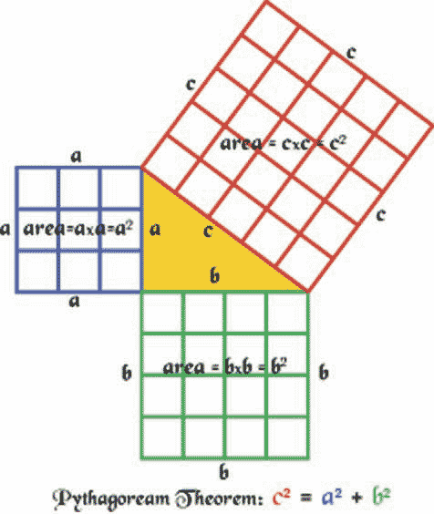
funzione per il calcolo dell'ipotenusa di un triangolo rettangolofloatfloatfrom math import sqrt
Cominciare a disegnare un grosso cerchio rosso
Poi, inserire l'operazione di disegno un ciclo, togliendo ad ogni passo 10 (p.es.) al raggio e al livello di rosso
Infine, determinare automaticamente, prima del ciclo, le variazioni migliori per raggio e colore
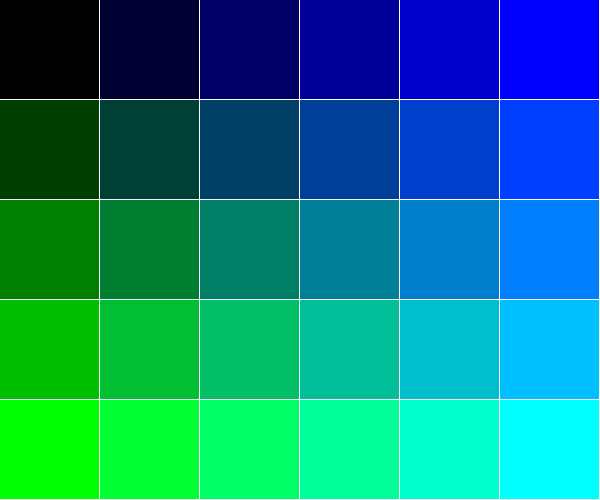
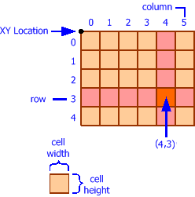
rows e colsrows×colsCominciare a creare una griglia di riquadri tutti neri, con due cicli for annidati
Lasciare tra i riquadri un piccolo margine
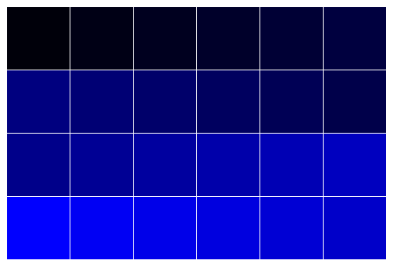
rows e colsrows×colsPer iniziare, seguire un più semplice percorso "a macchina da scrivere"
Poi invertire il verso delle righe con indice dispari
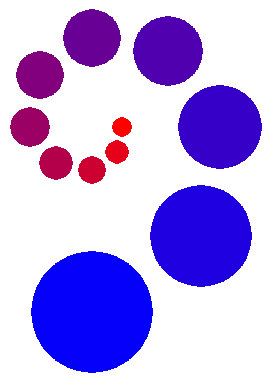
n scelto dall'utente) lungo una spiraler, attorno al punto (xc, yc)rxc, yc, r, angle = 320, 240, 40, 0.0
for i in range(8):
y = yc + int(r * math.sin(angle))
x = xc + int(r * math.cos(angle))
pygame.draw.circle(screen, (0, 0, 0), (x, y), 10)
angle += math.pi / 4

dx lo spostamento orizzontale da effettuare ad ogni ciclodx quando x < 0 oppure x + w > screen_width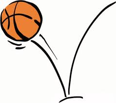
dy lo spostamento verticale da effettuare ad ogni ciclody = 0dy aumenta costantemente, ad ogni ciclody quando y + h > screen_height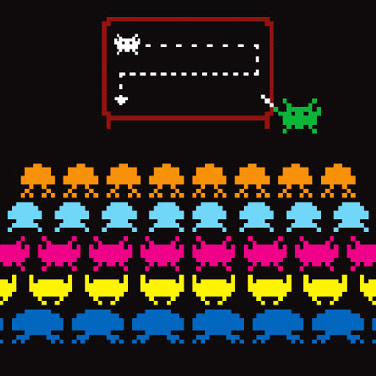
title: 3.1 Palline con gravità figure: images/misc/bouncing-ball.jpg
move, per farli avanzarerect, per ottenere la posizione attualemove, incrementare dydy_max, un valore massimo per dydy = -dy_max
Michele Tomaiuolo
Palazzina 1, int. 5708
Ingegneria dell'Informazione, UniPR
sowide.unipr.it/tomamic